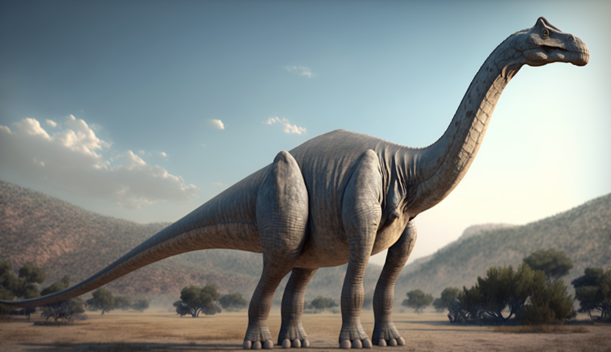
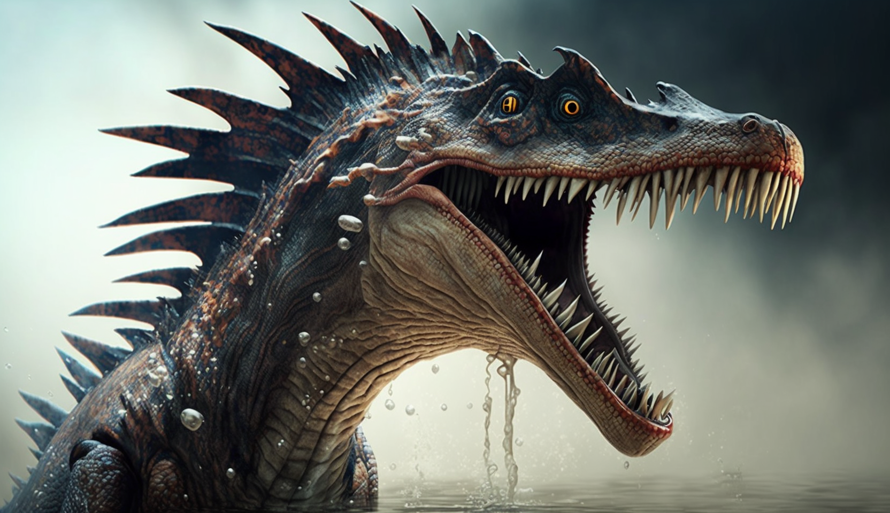
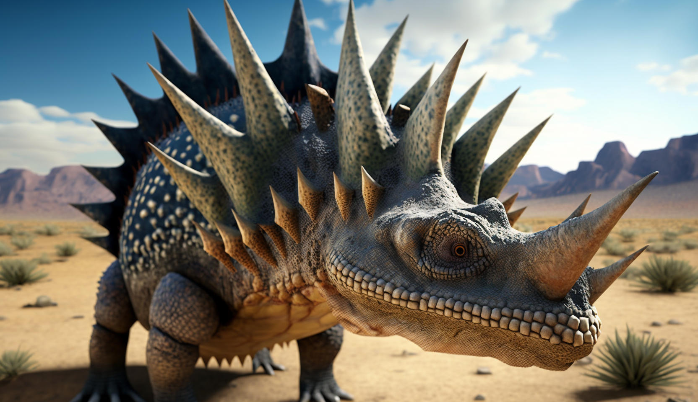
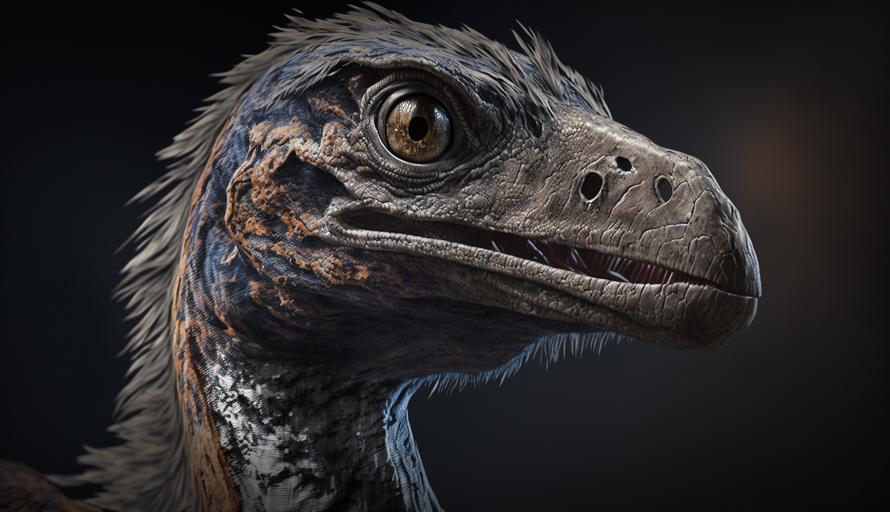

☰
Tiere
Öffnungszeiten & Preise
Restaurant
Karte
Rechtliches
Unsere Tiere
Unsere Allosaurier
Name: Alex
Höhe: 3m
Länge: 9m
Gewicht: 1400 kg
Alter: 20
Dec 16
Das männliche Allosaurus Individuum namens Alex ist ein stattlicher Raubsaurier mit einer Länge von bis zu 9 Metern und einem Gewicht von etwa 1.4 Tonnen. Er zeichnete sich durch seine großen und muskulösen Hinterbeine aus, mit denen er sich schnell fortbewegen und seine Beute jagen kann. Sein beeindruckendes Gebiss bestand aus scharfen Zähnen, die ihm halfen, Fleisch zu zerreißen und zu zerkleinern. Seine markanten Augen sind nach vorne ausgerichtet, was ihm eine gute räumliche Wahrnehmung verleiht. Alles in allem ist Alex eine gefährliche und imposante Kreatur.
Name: Anna
Höhe: 2.5m
Länge: 7m
Gewicht: 1100 kg
Alter: 19
Dec 1
Anna ist ein Allosaurus-Weibchen und gehört zu den größten Fleischfressern ihrer Zeit. Mit einer Länge von bis zu 7 Metern und einem Gewicht von über 1.1 Tonnen ist sie ein imposantes Tier. Ihre scharfen Zähne und kräftigen Krallen sind perfekt zum Jagen und Töten von Beute. Trotz ihrer Größe ist sie sehr schnell und wendig. Anna hat ein atemberaubendes oranges Gefieder und schwarze Streifen entlang ihres Körpers. Sie ist eine stolze und furchteinflößende Jägerin, die respektiert und gefürchtet wird.
nach oben
Allosaurus
Anklyosaurus
Brachiosaurus
Coelophysis
Mososaurus
Rex
Spinosaurus
Stegosaurus
Triceratops
Velociraptor



